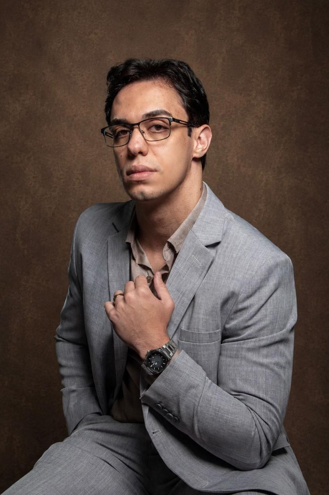
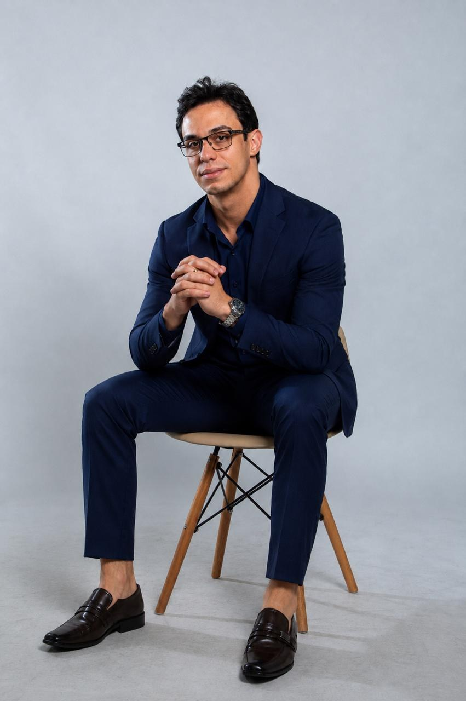

Anamnese Clínica Profunda
Mapeamento da sua história de vida e da pergunta essencial: "O que mudou na sua vida quando tudo mudou no seu peso?"

Você não falhou nas dietas por falta de disciplina. O seu corpo fez um acordo oculto com a sua mente para te proteger — e toda vez que você emagreceu na marra, ele sentiu perigo e colocou cada quilo de volta. Unimos a medicina metabólica de precisão à leitura corporal exclusiva para desarmar a causa da resistência antes de tratar o sintoma.
Agendar leitura corporal & consultaVocê passou anos tentando mudar o seu corpo. Fez dietas, contou calorias, tomou remédios, se puniu em treinos exaustivos. E quando o resultado não sustentou, a culpa caiu sobre você: disseram que faltava foco, disciplina e vergonha na cara.
Mas o corpo é o registro biológico mais honesto de quem você é. Ele nunca mente. Ele grita através do peso estagnado, da compulsão e do cansaço que nenhum exame comum explica. O Método METHACORPUS não começa com restrição: começa com compreensão. Porque quando você entende a mensagem, o mensageiro pode finalmente descansar.
“Tentar emagrecer apenas cortando calorias ou tomando injeções é apagar o incêndio com o registro de gás aberto. Apaga aqui, reacende ali. Precisamos fechar o registro.”
O peso na balança é apenas a ponta do iceberg. Por trás de cada quilo resistente existe uma história que a mente tentou esquecer, mas o corpo registrou em cada célula.
Força de vontade oscila e disciplina se esgota. Mas consciência, uma vez despertada, não se perde. Quando a função do peso é desarmada, o emagrecimento vira consequência natural.
O corpo retém peso para blindar sua vulnerabilidade e sexualidade contra julgamento, traição ou invasão. Quando você emagrece e passa a chamar atenção, o inconsciente dispara o alarme de perigo e sabota o processo para recolocar a armadura.
O corpo ganha densidade física para suportar carregar tudo e todos sozinho sem reclamar. Você engole o cansaço, a injustiça e a raiva na comida. Para o seu cérebro primitivo, perder peso significa ficar frágil e incapaz de dar conta da rotina.
O corpo busca volume físico para não passar invisível, enquanto a comida vira o único parceiro fiel que nunca critica ou abandona. A compulsão noturna não vem da fome do estômago, mas de uma solidão que pede aconchego e presença.
Seis fases integradas para reescrever a relação com o seu corpo e consolidar sua saúde para sempre.
Mapeamento da sua história de vida e da pergunta essencial: "O que mudou na sua vida quando tudo mudou no seu peso?"
Identificação dos pontos de retenção, tensões posturais e formato corporal para revelar qual função o peso está cumprindo.
A revelação do pacto inconsciente entre a mente e o corpo. O instante libertador em que tudo finalmente faz sentido.
Entrega do plano alimentar/médico com receitas digitais ICP-Brasil e do cardápio emocional com orientações práticas de ambiente e rotina.
Suporte contínuo para ajustar doses, acolher as mudanças corporais e impedir que velhos mecanismos de sabotagem retornem.
Consolidação do peso metabólico ideal com uma mente que aprendeu a ouvir e respeitar a própria biologia.
O Método METHACORPUS investiga as raízes metabólicas e emocionais que definem como o seu organismo responde.
Investigação médica integrativa dos bloqueios metabólicos aliada à decodificação morfológica. Tratamento conjunto da causa emocional e da queima fisiológica para eliminar o peso sem reganho e sem efeito sanfona, com suporte de terapias modernas como a tirzepatida (Mounjaro) quando clinicamente indicado.
Conversar sobre emagrecimento definitivo ↗Avaliação minuciosa de painéis hormonais completos (tireoide, cortisol, testosterona, estradiol, DHEA). Restauração dos níveis ideais para resgatar a vitalidade diária, regular o sono profundo, equilibrar a disposição física e otimizar a clareza mental.
Conversar sobre avaliação hormonal ↗Conduta médica voltada à otimização da síntese proteica e saúde osteometabólica. Mapeamento de fatores que travam o ganho de massa magra e densidade muscular, assegurando longevidade física e sustentação corporal segura.
Conversar sobre hipertrofia & densidade ↗Intervenções médicas para combater a inflamação crônica silenciosa, otimizar a função mitocondrial e proteger a saúde cardiovascular. Acompanhamento rigoroso para quem busca alta performance cognitiva e física ao longo das décadas.
Conversar sobre longevidade & performance ↗Uma imersão completa sem sair de casa, com o mesmo rigor científico e proximidade humana de um consultório de alto padrão.
Alinhamento de horários pelo WhatsApp e envio prévio do seu histórico de exames e linha do tempo de peso: “O que mudou quando tudo mudou?”
Videochamada privativa em alta definição. O Dr. Mateus realiza a leitura morfológica dos pontos de tensão e traça o diagnóstico clínico profundo.
Recebimento imediato no celular: Cardápio Alimentar com receitas digitais oficiais ICP-Brasil (válidas em todo o país) e Cardápio Emocional.
Canal contínuo de suporte com a equipe médica para dúvidas de dosagens, acompanhamento de exames e desmonte consistente da resistência corporal.

“O único médico que lê o corpo para entender a mente — e trata os dois juntos.”
O Dr. Mateus Camargos atua rompendo a barreira das consultas superficiais de 15 minutos e das prescrições padronizadas de balcão. À frente da METHA Corpus Clinic, desenvolveu uma abordagem médica integrativa que investiga o registro gravado na morfologia biológica de cada paciente antes de definir qualquer conduta.
Combinando a vanguarda dos tratamentos farmacológicos (como o uso criterioso da tirzepatida/Mounjaro) com a decodificação do Acordo Oculto, proporciona aos seus pacientes de todo o Brasil a jornada de emagrecimento mais honesta, sustentável e profunda que já vivenciaram.
“Pela primeira vez na vida um médico não me olhou como alguém preguiçosa. O Dr. Mateus me explicou exatamente o porquê do meu corpo estar retendo peso há 10 anos. Foi um alívio que nenhuma dieta conseguiu me dar.”
Paciente por Telemedicina · Nome preservado por sigilo médico
“O melhor atendimento que já tive até hoje. O Dr. Mateus trata a gente como se fosse um irmão dele! Atenção, ciência e um respeito absurdo pela história da gente.”
Relato verificado no Google Avaliações
“Moro em outro estado e estava insegura com a consulta online. Foi a melhor experiência médica que tive: mais de uma hora de conversa profunda, exames mapeados e receitas aceitas no mesmo dia na farmácia da minha cidade.”
Paciente por Telemedicina · Nome preservado por sigilo médico
Em conformidade com as diretrizes do Conselho Federal de Medicina (CFM), os relatos refletem percepções pessoais de acolhimento e metodologia. Cada organismo responde de forma única ao cuidado médico.
Entenda como a Leitura Corporal e o Método METHACORPUS transformam o seu processo de saúde.
A Leitura Corporal é uma ferramenta diagnóstica científica que avalia a morfologia, a distribuição de tensões e o padrão de retenção de peso do paciente. O corpo registra a sua história de vida e desenvolve defesas inconscientes. Na consulta, o Dr. Mateus identifica qual função o peso está exercendo na sua biologia (Proteção, Força ou Preenchimento), permitindo desarmar a causa da resistência antes de impor qualquer intervenção.
Porque dietas restritivas e injeções isoladas atuam apenas no sintoma (o número na balança). Se o seu corpo fez um Acordo Oculto para usar o peso como uma armadura de sobrevivência emocional, quando você emagrece na marra, o cérebro entra em estado de vulnerabilidade e perigo. Como resultado, ele aciona mecanismos biológicos de autossabotagem e compulsão para recuperar cada quilo. O Método METHACORPUS resolve a raiz desse ciclo.
Emagrecer de forma sustentável exige tratar o prato e o que está ao redor dele. Você recebe o Cardápio Alimentar (estratégia nutricional individualizada, exames laboratoriais e farmacologia médica avançada) e o Cardápio Emocional (mudanças práticas de rotina, limites, descargas de sobrecarga e regulação de estresse para desativar a função do peso).
Sim, quando clinicamente indicado após criteriosa avaliação médica e exames laboratoriais. O Dr. Mateus utiliza o que há de mais avançado na medicina metabólica mundial. A diferença fundamental é que na METHA Corpus o medicamento não é uma "muleta mágica", mas um aliado pontual enquanto o paciente constrói a consciência e a reeducação integral dos seus dois cardápios.
A consulta online é estruturada para oferecer a mesma profundidade e acolhimento do ambiente presencial, com mais de 1 hora de dedicação exclusiva em videochamada privativa em alta resolução. Todas as prescrições médicas e pedidos de exames são emitidos com assinatura digital ICP-Brasil por QR Code, aceitos legalmente em farmácias e laboratórios de todo o território brasileiro.
O agendamento é realizado diretamente com a nossa equipe no WhatsApp oficial. Encontramos o melhor horário para a sua rotina, passamos as orientações preliminares e organizamos o envio de seus exames prévios para a consulta.
Falar agora com a equipe no WhatsApp ↗Atendimento médico por videochamada privativa em alta definição, com 1h+ de dedicação exclusiva para leitura corporal, anamnese clínica profunda e plano dos Dois Cardápios.
Prescrições médicas oficiais e pedidos de exames laboratoriais emitidos com certificação digital ICP-Brasil, aceitos em farmácias e laboratórios de todo o território nacional.
Conte à nossa equipe o que você busca.
Agendamos sua consulta online e orientamos todos os passos do seu atendimento.